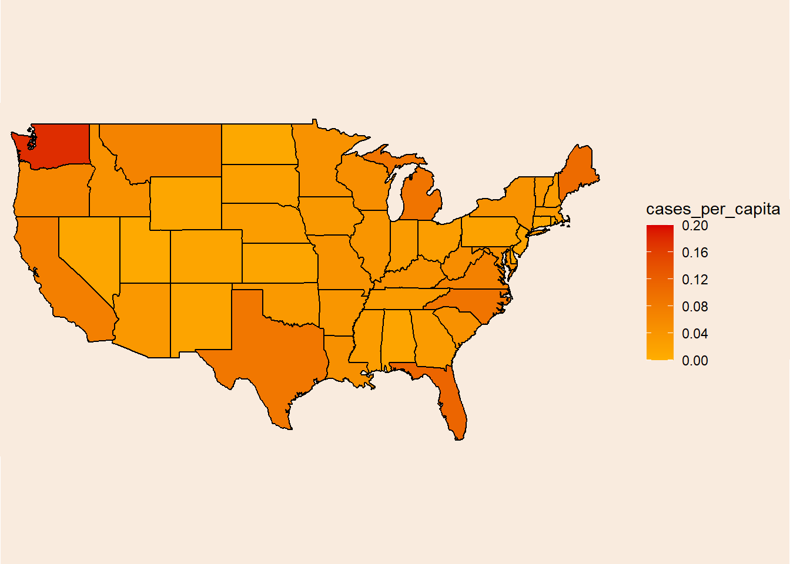

library(tidyverse) # for data wrangling and pre-processing
library(readxl)
library(tidytuesdayR) # for easy data loading
library(maps) # map data
library(lubridate) # makes dealing with date format much easier
library(jpeg)
library(ggimage)
library(showtext) # fontsBackground
As I told in another post, I’ve recently enrolled to a course about Data-Viz (and maybe some NLP later-on, stay tuned). One of the assignments in the course was to make some TidyTuesday contribution and present it in class. Although this is not what I’ve presented in class, this was made shortly after and I think it came out quite nice :)
The Data
From the Github repo:
This data includes >80,000 recorded UFO “sightings” around the world, including the UFO shape, lat/long and state/country of where the sighting occurred, duration of the “event” and the data_time when it occurred.
Data comes originally from NUFORC, was cleaned and uploaded to Github by Sigmond Axel, and some exploratory plots were created by Jonathan Bouchet a few years back.
Let’s start!
Setup
Loading data
Initial pre-processing
ufo_sightings <- readr::read_csv("https://raw.githubusercontent.com/rfordatascience/tidytuesday/master/data/2019/2019-06-25/ufo_sightings.csv")
usa <- map_data("state") # US map
state_codes <- read_csv("state_code.csv") %>% # converting from state name to 2-letter code and back
select(state, code) %>%
mutate(state = tolower(state), code = tolower(code))
uspop <- read_excel("uspop.xlsx", col_names = c("region", "pop_2010", "pop_2011", "pop_2012", "pop_2013", "pop_2014")) %>% # info about state population
mutate(region = tolower(str_remove(region, "."))) %>%
rowwise() %>%
mutate(mean_pop = mean(c(pop_2010, pop_2011, pop_2012, pop_2013, pop_2014))) %>%
ungroup() %>%
select(region, mean_pop)US population info taken from the United States Census Bureau.
Glimpsing at the data
glimpse(ufo_sightings)Rows: 80,332
Columns: 11
$ date_time <chr> "10/10/1949 20:30", "10/10/1949 21:00", "10…
$ city_area <chr> "san marcos", "lackland afb", "chester (uk/…
$ state <chr> "tx", "tx", NA, "tx", "hi", "tn", NA, "ct",…
$ country <chr> "us", NA, "gb", "us", "us", "us", "gb", "us…
$ ufo_shape <chr> "cylinder", "light", "circle", "circle", "l…
$ encounter_length <dbl> 2700, 7200, 20, 20, 900, 300, 180, 1200, 18…
$ described_encounter_length <chr> "45 minutes", "1-2 hrs", "20 seconds", "1/2…
$ description <chr> "This event took place in early fall around…
$ date_documented <chr> "4/27/2004", "12/16/2005", "1/21/2008", "1/…
$ latitude <dbl> 29.88306, 29.38421, 53.20000, 28.97833, 21.…
$ longitude <dbl> -97.941111, -98.581082, -2.916667, -96.6458…Defining functions
Some helper function will help us later, mainly to work with dates.
convert_to_date takes a vector of character formatted dates and converts it to lubridate’s date format. floor_decade takes a vector of dates and converts it to a vector of decades.
convert_to_date <- function(x) {
sub_string <- str_sub(x, 1, 10)
d <- mdy(sub_string)
return(as.numeric(d))
}
floor_decade <- function(x){
return(lubridate::year(x) - lubridate::year(x) %% 10)
}Converting the dates
ufo_sightings <- ufo_sightings %>%
mutate(date = as_date(purrr::map_dbl(date_time, ~convert_to_date(.)))) # Convert to 'Date' format. Run only once, its slow afGlobals
Here I’m loading some images and fonts that will be of use later to beautify the plot.
nightsky_img <- "nightsky2.jpg"
#font_files() %>% tibble() %>% filter(str_detect(family, "Showcard Gothic"))
font_add(family = "Showcard Gothic", regular = "SHOWG.TTF")
showtext_auto()Data pre-processing
Preparing the data for plotting. I did several things in here:
1. Leaving only reports from the US.
2. Leaving only reports for continental US.
3. Selecting the relevant variables.
4. Calculating decades.
ufo <- ufo_sightings %>%
filter(country == "us") %>% # Leaving only sightings in US
filter(!(state %in% c("ak", "pr", "hi"))) %>% # Only mainland US
select(date, code = state, description, encounter_length, latitude, longitude) %>%
left_join(state_codes, by = "code") %>%
mutate(decade = as.factor(purrr::map_dbl(date, ~floor_decade(.)))) %>% # Create decade variable
drop_na(decade)After some experimenting I’ve decided to make a heat map to visualize the number of UFO reports per state. But first, some more data processing. I first counted the number of cases per state (by_state), and then combined it with the USA map data frame (by_state2).
by_state <- ufo %>%
group_by(state, decade, .drop = F) %>%
summarise(cases = n(),
.groups = "drop")
by_state2 <- left_join(usa, by_state, by = c("region" = "state"), multiple = "all") %>%
filter(decade %in% c(2000, 2010)) %>%
left_join(uspop, by = "region")Now I need to summarize the number of cases per state.
cases_per_state <- by_state2 %>%
group_by(region) %>%
summarise(cases = sum(cases), .groups = "drop")And finally merge it back together with the geographic data.
by_state2 <- left_join(by_state2, select(cases_per_state, region, cases_total = cases), by = "region")Heatmap 1
And now for the heat map… drum roll
heatmap <- ggplot(by_state2, aes(x = long, y = lat, fill = cases_total, group = group)) +
geom_polygon(color = "black", show.legend = T) +
scale_fill_gradient(low = "#ffae00", high = "#d90000", limits = c(0, 2864832), breaks = c(0, 2850000)) +
coord_fixed(1.3, clip = "off") +
theme_minimal()
heatmapLooking at these results, I thought that of course California, Texas and Florida have the most reports, they also have the most people!
A per capita measure will probably be more informative.
Calculating reports per capita.
cases_per_capita <- by_state2 %>%
group_by(region) %>%
summarise(cases = sum(cases), .groups = "drop") %>%
left_join(uspop, by = "region") %>%
mutate(cases_per_capita = cases/mean_pop)Merging again with the geographical data.
by_state2 <- left_join(by_state2, select(cases_per_capita, region, cases_per_capita, cases_total = cases), by = "region")Heatmap 2
heatmap2 <- ggplot(by_state2, aes(x = long, y = lat, fill = cases_per_capita, group = group)) +
geom_polygon(color = "black", show.legend = T) +
scale_fill_gradient(low = "#ffae00", high = "#d90000", limits = c(0, 0.2), breaks = seq(0, 0.2, length.out = 6)) +
coord_fixed(1.3, clip = "off") +
theme_minimal()
heatmap2
Nice!
Heatmap3
Let’s add some aesthetics because why not (I’ve only spent 6 hours on Google researching color theory and ggplot2’s internal logic). Unfold the code chunk if you are interested in seeing the monstrosity.
Code
heatmap3 <- ggplot(by_state2, aes(x = long, y = lat, fill = cases_per_capita, group = group)) +
geom_polygon(color = "#00670c", show.legend = T) +
scale_fill_gradient(low = "black", high = "#5dff00", limits = c(0, 0.2), breaks = seq(0, 0.2, length.out = 6), guide = guide_colorbar("Number of reported cases per capita",
title.position = "top",
title.theme = element_text(color = "#5dff00", family = "serif"),
title.hjust = 0.5,
barwidth = 30,
ticks.colour = NA)) +
labs(title = "15 years of UFO sightings in the US between 2000 and 2014",
caption = "Tomer Zipori | #TidyTuesday | Source: National UFO Reporting Center") +
coord_fixed(1.3, clip = "off") +
theme_minimal() +
annotate("label", x = -130, y = 45.4, label = "Washington is spooky!\n # of cases: 1,228,975\n Cases per capita: 0.18",
color = "#5dff00", fill = "black", family = "serif", fontface = "bold") +
geom_curve(aes(x = -127.5, y = 46.4, xend = -124.48, yend = 47.4), color = "#5dff00", linewidth = 1, curvature = -0.35,
arrow = arrow(type = "closed", length = unit(0.02, "npc"))) +
annotate("label", x = -124, y = 30.4, label = "Utah has the lowest rate in the US\n # of cases: 22,715\n Cases per capita: 0.0079",
color = "#5dff00", fill = "black", family = "serif", fontface = "bold") +
geom_curve(aes(x = -119.4, y = 31.4, xend = -111.5, yend = 39), color = "#5dff00", linewidth = 1, curvature = 0.3,
arrow = arrow(type = "closed", length = unit(0.02, "npc"))) +
theme(plot.title = element_text(size = 24, vjust = -4, hjust = 0.5, color = "#5dff00", family = "Showcard Gothic"),
plot.caption = element_text(color = "#5dff00", hjust = 1.05, family = "serif", size = 9),
axis.title.x = element_blank(),
axis.title.y = element_blank(),
axis.text.x = element_blank(),
axis.text.y = element_blank(),
panel.grid = element_blank(),
legend.position = "bottom", legend.box = "horizontal", legend.text = element_text(color = "#5dff00", family = "mono", size = 14))
heatmap3 <- ggbackground(heatmap3, nightsky_img)Conclusion
Washington is spooky! I really don’t know why Washington is leading in this measure. Like most people I’ve expected to find Nevada or Utah (which is last!) in the first place. Having said that, UFO stands for “Unidentified foreign object”, maybe the people of Nevada know what they are seeing in the sky lol.